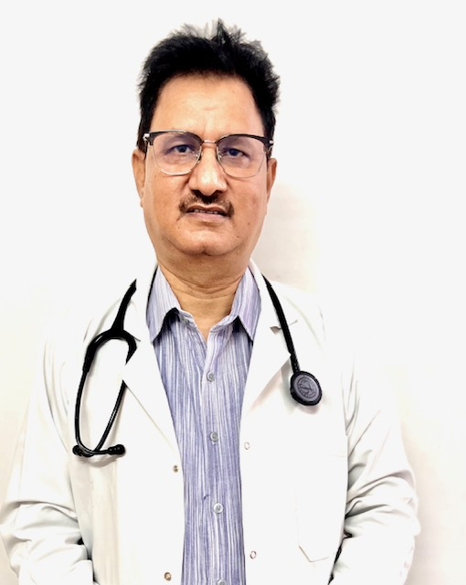
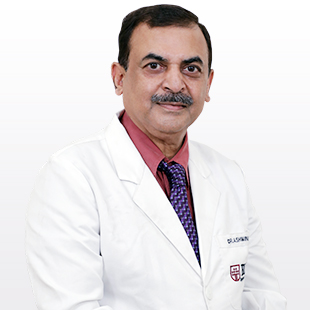

Best Nephrologist
Dr. Sham Sunder
MBBS, MD - Medicine, DM - Nephrology
Nephrologist/Renal Specialist
47 Years Experience Overall (29 years as specialist)

Dr. B. S. Solanki
MBBS, MD - General Medicine, DM - Nephrology
Nephrologist/Renal Specialist
32 Years Experience Overall (24 years as specialist)

Dr. Ashwini Goel
MBBS, MD - Medicine, DM - Nephrology
Nephrologist/Renal Specialist
40 Years Experience Overall
Dr. D Mukherjee
DM - Nephrology, MD - General Medicine, MBBS
Nephrologist/Renal Specialist,
Internal Medicine,
Consultant Physician
32 Years Experience Overall (25 years as specialist)
Dr. Sahil Bagai
DM - Nephrology, MBBS, MD - General Medicine
Nephrologist/Renal Specialist
9 Years Experience Overall (6 years as specialist)